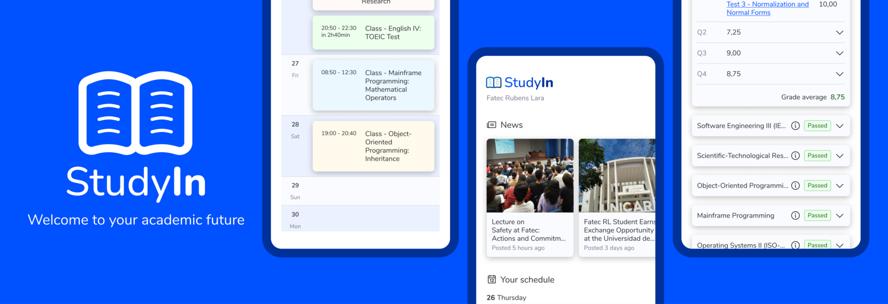
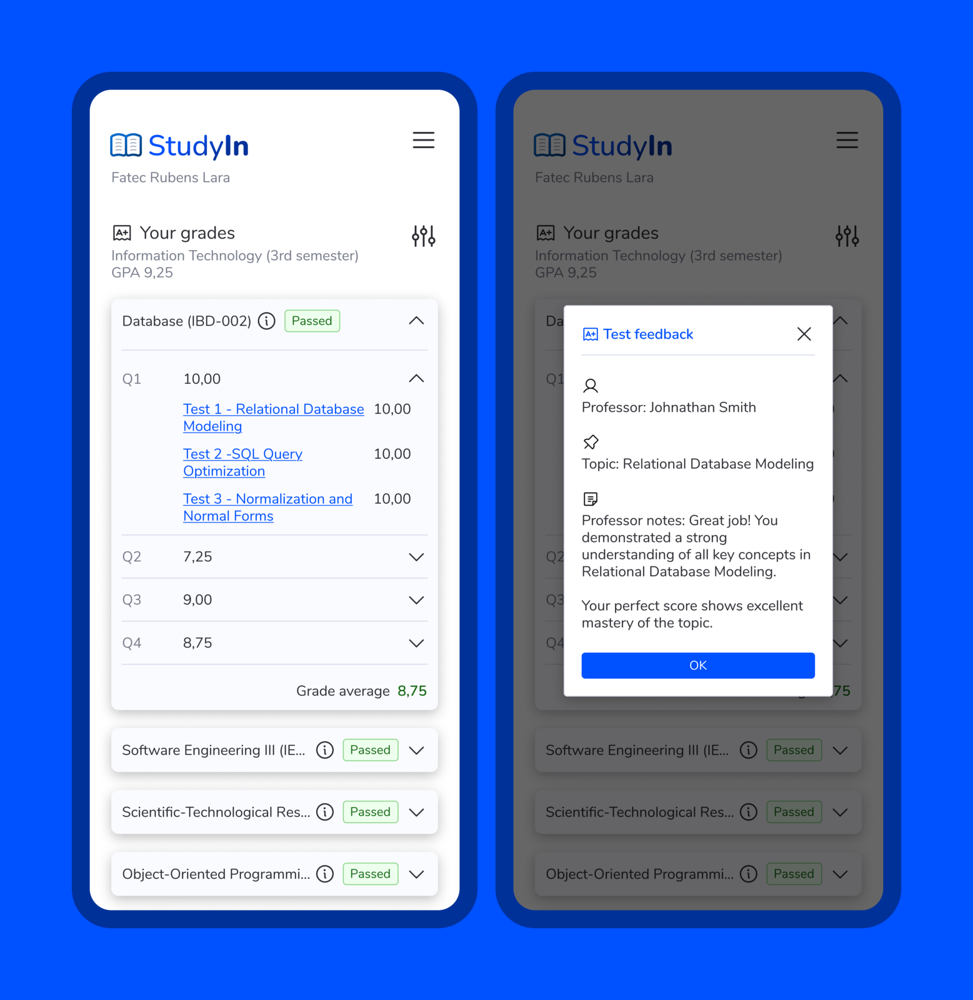
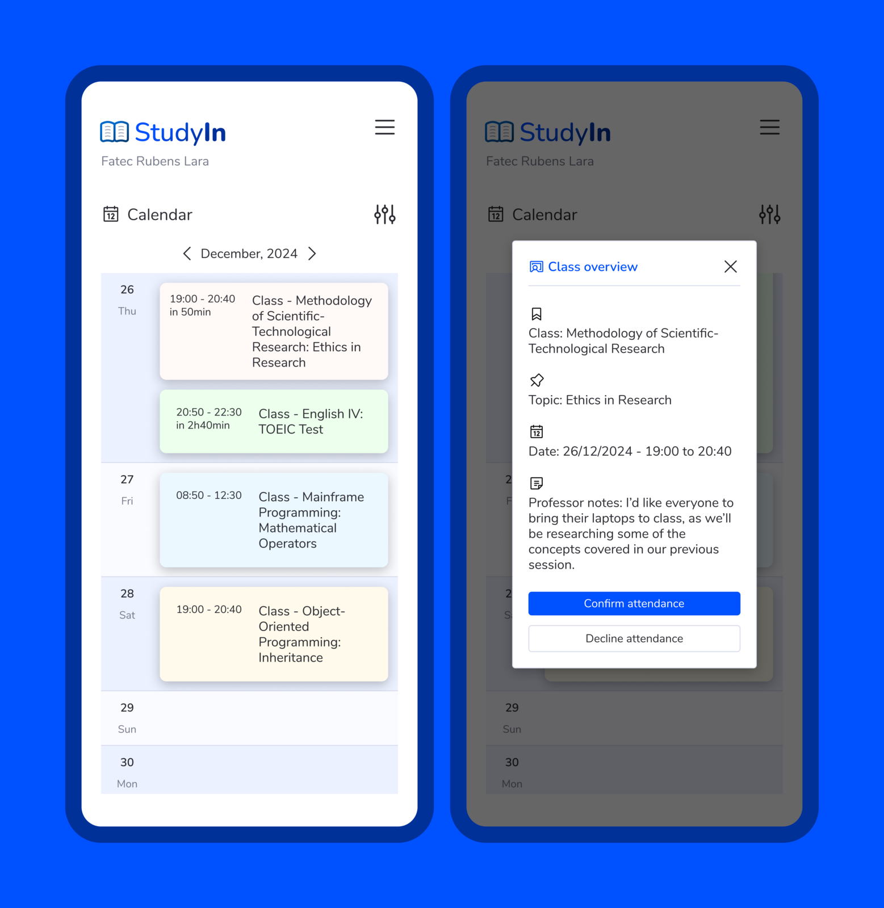
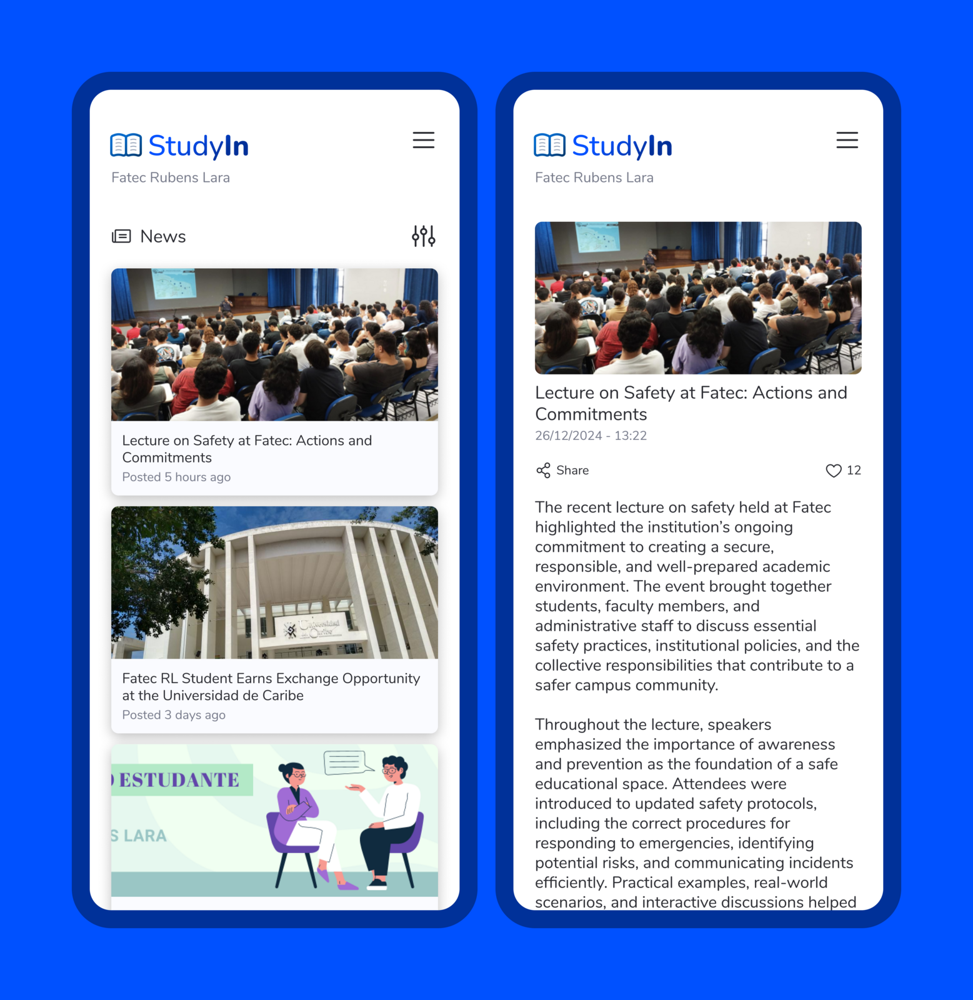
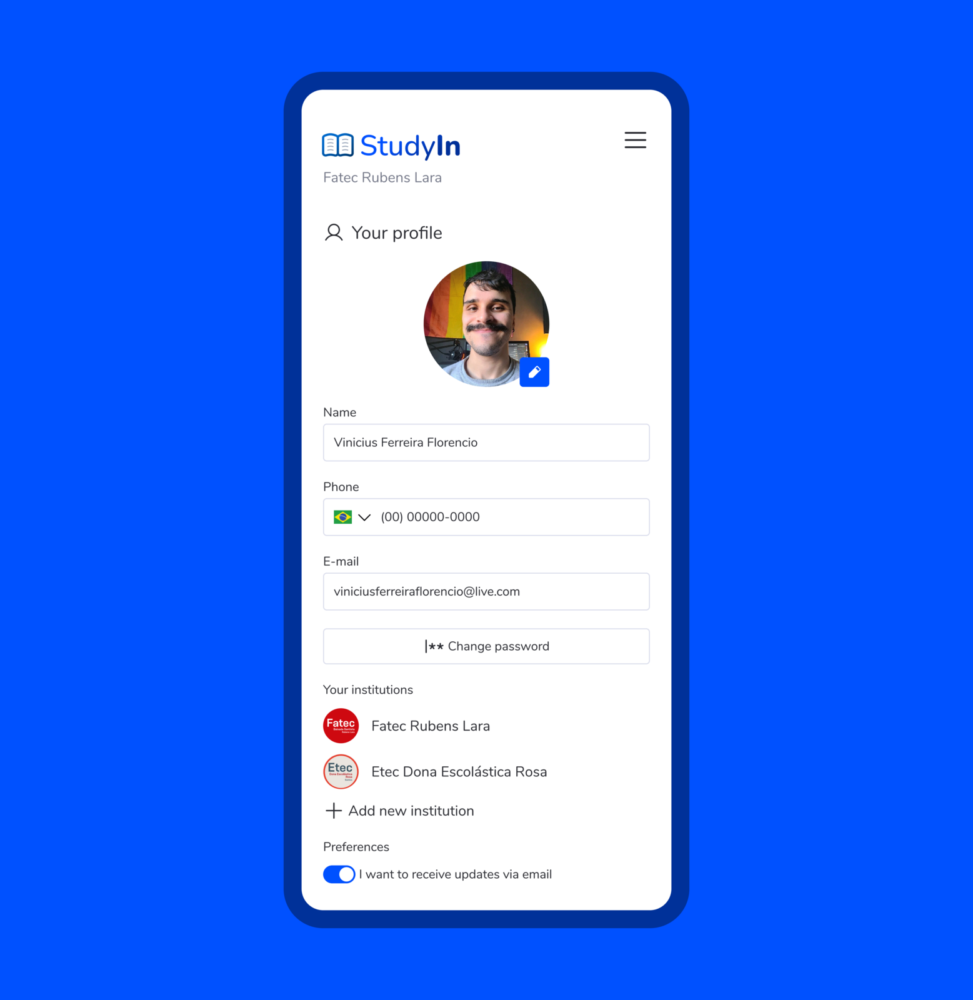

StudyIn
StudyIn is a MVP developed during my college years. It was designed to centralize and simplify access to essential academic resources and information for students. It also provides a single platform where users can easily access features like personalized schedules, news, real-time grades and more.
With its intuitive design, StudyIn aims to streamline the academic experience, reducing the need to switch between multiple platforms and ensuring that students have everything they need at their fingertips.
Main problem
Research
Persona
Development

Flexible onboarding
Users can sign up with a simplified form or instantly create an account using their social network profiles.

Home screen
The initial screen provides a clear overview of the schedule and the latest news, allowing students to access their upcoming classes and important announcements at a glance.

Grades
Users can view individual grades for each subject, track their progress over time, and access feedback from instructors.

Calendar
The calendar features upcoming classes in a clear and organized way, showing the class name, time, and duration. Students can also confirm attendance in advance and view any notes or announcements from the professor.

News
Users can now access and share the latest college news within the app, eliminating the need to open the university's website.

Profile
Users can view and update their personal information within the app without needing to contact the institution.

Real-time notifications
Alerts for upcoming deadlines, class schedules, and significant updates ensure that students never miss critical information.
Modern look
Unlike the current system used by students StudyIn features a modern and minimalist layout using the latest version of the Basic UI Kit. In addition to being accessible the system also offers light and dark mode variants for greater customization.